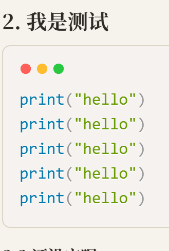

241201记一次街边音乐
2024年12月1日日记 · 信阳
1. 你好
2024年12月1日，信阳的一个小村子里，悠闲的时光，一个街边音乐，音乐还是挺能激起人们心中的情感的。
背景
借研学之名，沿途感受信阳的风土人情，看人家的新村建设非常不错，同行人：王俊才、李姗姗、孙凯、刘书红、郭静、李彦君、曹佳铭、刘嘉、李姝仪、李贝贝、黄泽明。同游累，小憩一会，偶遇街边音乐。
沉闷的课堂固然可以让你掌握扎实的专业基础知识，但紧张的比赛才能为你插上腾飞的翅膀！
不好好逼自己一把，你怎么知道自己不可以展翅翱翔！
2. 我是测试
print("hello")
print("hello")
if a < b:
print("你好")
print("hello")
print("hello")
print("hello")2.2 还没完呢
@Entry
@Component
struct DemoPage {
@State count: number = 0;
@Builder titleTip(msg: string) {
Text(msg).fontSize(24)
}
<T>&测试</T>
build() {
Column() {
Text(`计数：${this.count}`)
.fontSize(30)
.fontWeight(FontWeight.Bold)
Button("点我+1")
.onClick(()=>{
this.count++
})
}
}
}
#ifndef MYAPPLICATION_ARKUIGRIDNODE_H
#define MYAPPLICATION_ARKUIGRIDNODE_H
#include "ArkUINode.h"
#include "ArkUINodeAdapter.h"
namespace NativeModule {
class ArkUIGridNode : public ArkUINode {
public:
ArkUIGridNode() : ArkUINode((NativeModuleInstance::GetInstance()->GetNativeNodeAPI())->createNode(ARKUI_NODE_GRID))
{
}
~ArkUIGridNode() override {}
void SetColumnsTemplate(const std::string &str)
{
ArkUI_AttributeItem item = {.string = str.c_str()};
nativeModule_->setAttribute(handle_, NODE_GRID_COLUMN_TEMPLATE, &item);
}
void SetRowsTemplate(const std::string &str)
{
ArkUI_AttributeItem item = {.string = str.c_str()};
nativeModule_->setAttribute(handle_, NODE_GRID_ROW_TEMPLATE, &item);
}
void SetColumnsGap(float val)
{
ArkUI_NumberValue value[] = {{.f32 = val}};
ArkUI_AttributeItem item = {value, 1};
nativeModule_->setAttribute(handle_, NODE_GRID_COLUMN_GAP, &item);
}
void SetRowsGap(float val)
{
ArkUI_NumberValue value[] = {{.f32 = val}};
ArkUI_AttributeItem item = {value, 1};
nativeModule_->setAttribute(handle_, NODE_GRID_ROW_GAP, &item);
}
void SetLayoutOptions(ArkUI_GridLayoutOptions *option)
{
if (option == nullptr) {
return;
}
ArkUI_AttributeItem item = {.object = option};
nativeModule_->setAttribute(handle_, NODE_GRID_LAYOUT_OPTIONS, &item);
}
void SetScrollBar(int32_t barState)
{
ArkUI_NumberValue value[] = {{.i32 = barState}};
ArkUI_AttributeItem item = {value, 1};
nativeModule_->setAttribute(handle_, NODE_SCROLL_BAR_DISPLAY_MODE, &item);
}
void SetLazyAdapter(const std::shared_ptr<ArkUINodeAdapter> &adapter)
{
if (!IsNotNull(adapter)) {
return;
}
ArkUI_AttributeItem item{nullptr, 0, nullptr, adapter->GetAdapter()};
nativeModule_->setAttribute(handle_, NODE_GRID_NODE_ADAPTER, &item);
_adapter = adapter;
}
void ReleaseAdapter() { return _adapter.reset(); }
private:
std::shared_ptr<ArkUINodeAdapter> _adapter;
};
} // namespace NativeModule
#endif // MYAPPLICATION_ARKUIGRIDNODE_H
<h1>这是一个标题。</h1>
<h2>这是一个标题。</h2>
<h3>这是一个标题。</h3>
村子很安静，屋舍整洁，路边栽着金黄的行道树。我们走了一上午，正靠在路边歇脚的时候，一阵吉他声从街角传来。有人搬了小板凳坐在树下，膝上抱着琴，身前摆着打开的琴盒。
2.3 有完没完啊
我原本只觉得这是旅途里平常的一幕，可当熟悉的旋律响起，同行的人都停了下来。那一刻大家都安静了，谁也没说话，就那么听着。音乐就是有这种力量，把一群赶路的人，轻轻按在原地。

歇够了，我们继续上路。那阵琴声还飘在身后，像这趟旅程里最轻、也最难忘的一页。中